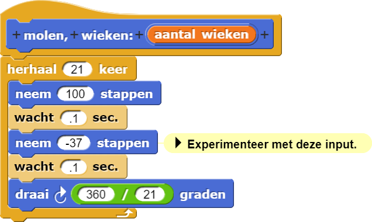
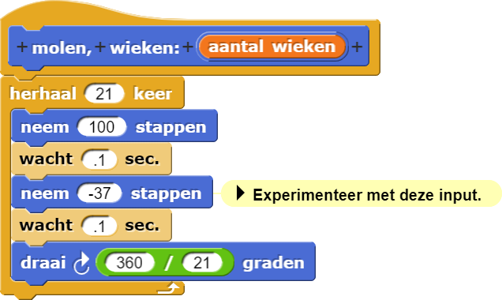
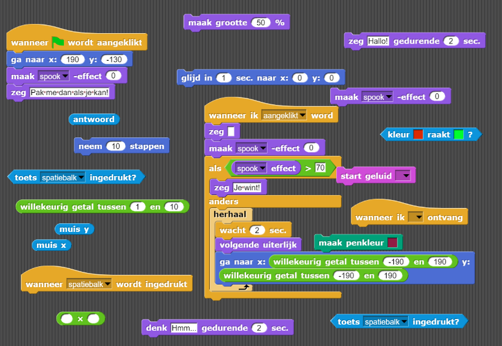
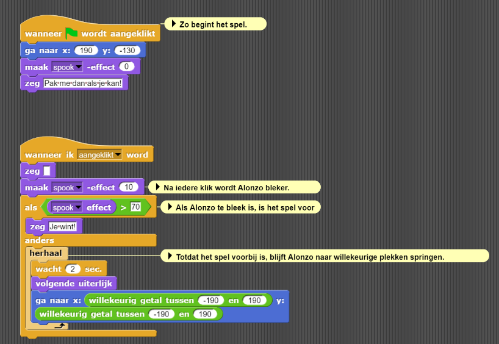
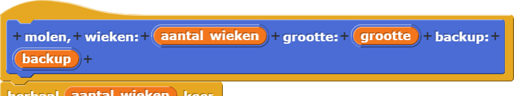

Pas Je Molen Aan
molen blok aanpassen zodat je het kunt
gebruiken om verschillende vormen te tekenen.
Meerdere invoer toevoegen
Bedenk hoe je je originele script generalizeerde: je voegde een invoer variabele toe genaamd branches die de hoeken van de sprite regelde. Door meer invoer variabelen toe te voegen, kun je andere aspecten van je programma generaliseren...
- Als je het nog niet hebt geopend, open dan je H1L3-Molen project.
-
Experimenteer met de invoer voor het tweede
zetblok in jemolenblok zoals hieronder.
-
 Maak eerst een voorspelling. Wat denk je dat er zal gebeuren?

Maak eerst een voorspelling. Wat denk je dat er zal gebeuren?

- Probeer dan verschillende getallen tussen -100 en 0 voor de invoer.
-
 Wat gebeurde er? Op wat voor manier is het vergelijkbaar met hoe je het voorspelde? Hoe
beinvloed deze invoer-waarde het gedrag van de sprite?
Wat gebeurde er? Op wat voor manier is het vergelijkbaar met hoe je het voorspelde? Hoe
beinvloed deze invoer-waarde het gedrag van de sprite?
-
-
Bekijk opnieuw hoe je een invoer moet toevoegen bij Hoofdstuk 1 Les 3 Pagina 3: Blokken met invoer , als dat nodig is.Voeg een tweede invoer-variabele toe om de hoeveelheid "backing up" te regelen die de sprite doet voor elke draai door de volle 360°.
- Bewerk je
molenblok, klik dan op het "+" teken aan het eind om een invoerlabel toe te voegen (Kies "titel text"). Typebackup:zoals hieronder, en klik "OK". - Klik dan weer op het "+" teken aan het eind om nog een keer een invoervariabele toe te voegen (Kies "invoer naam"), en noem het backup.
- Sleep de backup variabele weg, plaats het daar waar het hoort in de
molencode, en druk op "OK" of "Toevoegen." - Zorg dat het nieuwe invoerbalkje in het
molenblok zich gedraagt zoals de veranderingen in je experiment hierboven.

- Bewerk je
- Verander het
molenscript zodanig dat het een positieve waarde accepteert (tussen 0 en 100) voor backup.
Debug-Tip: Organiseer je code
Een super goede manier om bugs in de eerste instantie te voorkomen, is om je code te organiseren door
blokken die je niet gebruikt of nodig hebt te verwijderen. Onderstaand vind je voorbeelden van rommelige
code en netjes georganiseerde code met opmerkingen. Als je terugkomt naar een project na een paar dagen,
welke code denk je dan dat het makkelijkst is om te debuggen?


Je kunt de opruimen optie gebruiken door met je rechtermuisknop in het script gedeelte
te klikken en je blokken te organiseren en (verticaal) goed te zetten. Je kunt ook blokken of scripts
verwijderen door ze uit het script gedeelte te slepen en terug in de palettes te plaatsen aan je
linkerkant of door op de "verwijderen" optie te klikken in het drop-down menu zoals je hieronder ziet.
Let op dat dit dus anders is dan de "verwijder blok definitie", deze optie verwijdert permanent je
speciaal aangemaakte
blok en alles wat daarbij hoort binnen je project.
-
Voeg een andere invoer toe genaamd grootte om de invoer naar het eerste
zetblok te regelen.
 -
Probeer verschillende invoeren uit in je
molenprogramma...
 size: (80) backup: (20)")
 size: (80) backup: (60)")
-
Bespreek welke invoer waarden je en polygoon of an asterisk geven.


wachtblokken
binnen het molenscript zodat je niet zo lang hoeft te wachten tussen de testen.- Vind invoeren voor
molendie het resultaat doet lijken op een cirkel.
-
Maak een foto die meer op een échte molen lijkt:

Copyright 2010 Victoria Hudgins. Used by permission.(Sla je project eerst op; je zult het
molenblok die je nu hebt later nog nodig hebben.)Het hoeft niet precies op de foto te lijken. Maar elke arm van de molen zijn in feite twee driehoeken. Misschien vind je het blok handig.